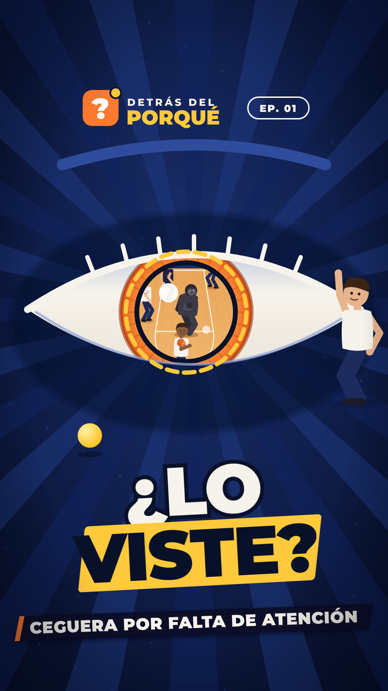

<title>Detrás del Porqué · Episodio 01</title>
<meta name="claude:viewport-fit-sides" content="cover">
<link rel="preconnect" href="https://fonts.googleapis.com">
<link rel="stylesheet" href="https://fonts.googleapis.com/css2?family=Montserrat:wght@700;800;900&family=Inter:wght@400;500;600&display=swap">
<style>
  /* Una columna: ficha del episodio con reproductor vertical, datos y botón de descarga */
  :root {
    --bg: #f2f3f8; --surface: #ffffff; --fg: #0b1636; --muted: #56607e; --line: #dde1ee;
    --accent: #ffc93c; --accent-ink: #1c1600; --orange: #e2581f; --band: #0b1636; --band-ink: #f6f3ec;
    --display: "Montserrat", "Arial Black", system-ui, sans-serif;
    --body: "Inter", system-ui, -apple-system, "Segoe UI", sans-serif;
  }
  @media (prefers-color-scheme: dark) { :root:not([data-theme="light"]) {
    --bg: #081128; --surface: #0f1d48; --fg: #f6f3ec; --muted: #a9b3cf; --line: #22336a;
    --accent: #ffc93c; --accent-ink: #1c1600; --orange: #ff7a2f; --band: #f6f3ec; --band-ink: #0b1636; color-scheme: dark } }
  :root[data-theme="dark"] {
    --bg: #081128; --surface: #0f1d48; --fg: #f6f3ec; --muted: #a9b3cf; --line: #22336a;
    --accent: #ffc93c; --accent-ink: #1c1600; --orange: #ff7a2f; --band: #f6f3ec; --band-ink: #0b1636; color-scheme: dark }
  body { background: var(--bg); color: var(--fg); font-family: var(--body); font-size: 15px; line-height: 1.55;
    padding-left: max(16px, env(safe-area-inset-left, 0px)); padding-right: max(16px, env(safe-area-inset-right, 0px)); padding-block: 28px 48px; }
  main { max-width: 560px; margin: 0 auto; display: grid; gap: 20px; }
  .brand { display: flex; align-items: center; gap: 12px; }
  .mark { width: 44px; height: 44px; border-radius: 12px; background: var(--orange); color: #fff; font: 900 30px/44px var(--display); text-align: center; position: relative; flex: none; }
  .mark::after { content: ""; position: absolute; width: 13px; height: 13px; border-radius: 50%; background: var(--accent); border: 3px solid var(--bg); top: -6px; right: -6px; }
  .brand small { display: block; font: 800 11px/1.2 var(--display); letter-spacing: .22em; color: var(--muted); }
  .brand b { font: 900 22px/1.1 var(--display); color: var(--orange); }
  h1 { font: 900 clamp(30px, 8.4vw, 46px)/1.02 var(--display); margin: 0; text-wrap: balance; }
  h1 .band { display: inline-block; background: var(--band); color: var(--band-ink); padding: 0 .18em; transform: skewX(-8deg); }
  h1 .band span { display: inline-block; transform: skewX(8deg); }
  h1 mark { background: var(--accent); color: var(--accent-ink); padding: 0 .1em; }
  .lead { color: var(--muted); margin: 0; max-width: 60ch; }
  .clip { background: var(--surface); border: 1px solid var(--line); border-radius: 20px; padding: 16px; display: grid; gap: 14px; }
  video { width: 100%; max-width: 100%; aspect-ratio: 9 / 16; max-height: 72vh; background: #000; border-radius: 12px; display: block; margin: 0 auto; object-fit: contain; }
  .meta { display: flex; flex-wrap: wrap; gap: 8px; margin: 0; padding: 0; list-style: none; }
  .meta li { font: 700 12px/1 var(--display); letter-spacing: .06em; padding: 8px 10px; border-radius: 999px; border: 1px solid var(--line); color: var(--muted); font-variant-numeric: tabular-nums; }
  .note { color: var(--muted); font-size: 13px; margin: 0; }
  .row { display: flex; flex-wrap: wrap; gap: 10px; align-items: center; }
  button { font: 800 15px var(--display); border: 0; border-radius: 999px; padding: 14px 22px; background: var(--accent); color: var(--accent-ink); cursor: pointer; }
  button:hover { filter: brightness(1.05); }
  button:focus-visible { outline: 3px solid var(--fg); outline-offset: 2px; }
  button[disabled] { opacity: .6; cursor: progress; }
  .status { font-size: 13px; color: var(--muted); min-width: 0; }
  .status.err { color: var(--orange); }
</style>

<main>
  <div class="brand"><div class="mark" aria-hidden="true">?</div><div><small>DETRÁS DEL</small><b>PORQUÉ</b></div></div>
  <h1><span class="band"><span>Episodio 01</span></span><br>Ceguera por falta de <mark>atención</mark></h1>
  <p class="lead">Motion graphics editorial 2D / 2.5D. El reproductor muestra una vista previa ligera; la descarga es el archivo completo en alta calidad.</p>
  <article class="clip">
    <video controls playsinline preload="metadata" poster="poster.jpg" src="vista_previa.mp4"></video>
    <ul class="meta"><li>2:01</li><li>1080 × 1920</li><li>30 FPS</li><li>9:16</li><li>95 MB</li></ul>
    <p class="note">Incluye locución, subtítulos cinéticos, tipografía animada, música y efectos.</p>
    <div class="row"><button type="button" id="dl">Descargar MP4 (1080p)</button><span class="status" id="st" role="status"></span></div>
  </article>
  <article class="clip">
    
    <ul class="meta"><li>PORTADA</li><li>1080 × 1920</li><li>PNG</li></ul>
    <div class="row"><button type="button" id="dlc">Descargar portada (PNG)</button><span class="status" id="stc" role="status"></span></div>
  </article>
</main>

<script>
  // El MP4 completo se publica en trozos (cada archivo publicado admite como máximo 15 MB); la página los une.
  const FILE = 'detras_del_porque_ep01_1080x1920.mp4';
  const PARTS = [0, 1, 2, 3, 4, 5, 6].map(i => `partes/ep01_p${i}.mp4`);
  let blob = null;
  async function getBlob(onProgress) {
    if (blob) return blob;
    const bufs = [];
    for (let i = 0; i < PARTS.length; i++) {
      const r = await fetch(PARTS[i]); if (!r.ok) throw { code: 'fetch' };
      bufs.push(await r.arrayBuffer()); onProgress(i + 1, PARTS.length);
    }
    return (blob = new Blob(bufs, { type: 'video/mp4' }));
  }
  const dl = (window.claude && claude.use) ? claude.use('downloads') : Promise.resolve(null);
  const btn = document.getElementById('dl'), st = document.getElementById('st');
  document.getElementById('dlc').addEventListener('click', async (ev) => {
    const b2 = ev.currentTarget, s2 = document.getElementById('stc');
    s2.className = 'status'; s2.textContent = 'Preparando…'; b2.disabled = true;
    try {
      const downloads = await dl; if (!downloads) throw { code: 'unavailable' };
      const r = await fetch('portada_1080x1920.png'); if (!r.ok) throw { code: 'fetch' };
      s2.textContent = 'Confirma la descarga en el aviso.';
      await downloads.save({ filename: 'detras_del_porque_ep01_portada.png', data: await r.blob() });
      s2.textContent = 'Descargada.';
    } catch (e) {
      s2.className = 'status err';
      s2.textContent = e && e.code === 'declined' ? 'Descarga cancelada.' : 'Esta vista no permite descargas. Abre la página en claude.ai desde un navegador.';
    } finally { b2.disabled = false; }
  });
  btn.addEventListener('click', async () => {
    st.className = 'status'; st.textContent = 'Preparando el archivo…'; btn.disabled = true;
    try {
      const downloads = await dl;
      if (!downloads) throw { code: 'unavailable' };
      const b = await getBlob((n, total) => { st.textContent = `Preparando el archivo… ${Math.round(n / total * 100)} %`; });
      st.textContent = 'Confirma la descarga en el aviso.';
      await downloads.save({ filename: FILE, data: b });
      st.textContent = 'Descargado.';
    } catch (e) {
      st.className = 'status err';
      st.textContent = e && e.code === 'declined' ? 'Descarga cancelada.'
        : e && e.code === 'rate_limited' ? 'Hay otra descarga en curso. Espera unos segundos y vuelve a pulsar.'
        : e && e.code === 'fetch' ? 'No se pudo preparar el archivo. Vuelve a intentarlo.'
        : 'Esta vista no permite descargas. Abre la página en claude.ai desde un navegador.';
    } finally { btn.disabled = false; }
  });
</script>
